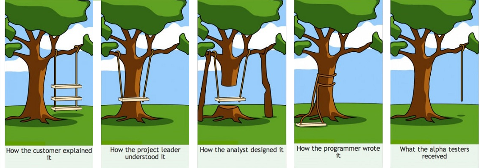
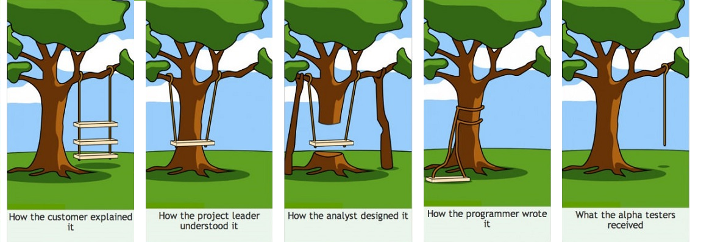

Evolve your Frontend Workflow
Graham Marlow
Modern Frontend Toolsets
- React, Redux, create-react-app
- Angular, Angular CLI
- Vue, TypeScript-Vue-Starter
- Start with a mock
- Break the UI into a component hierarchy
- Build a static version (HTML)
- Identify and add state (logic and data)
The Mocking Phase
 

Scenario-driven Development
- Start with a mock
- Break the UI into a component hierarchy
- Build a complete, stateful version of the simplest component
- Repeat #3 until entire UI is finished
Scenario-driven Development
- Fully demo-able UI at every step in development
- Changes are easier, affect fewer components
- More isolated, functional components